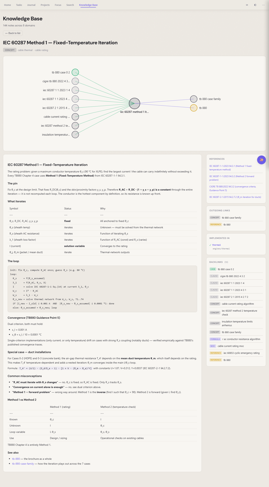

Learn
Turn your reading into a knowledge base.¶
A concept you read once, you can lose. A concept linked to its source, the formula that implements it, and every case that cites it — that one stays.

The "EG-0 risk framework" concept — its source standards on the right, related concepts in the graph above, and the formulas that depend on itEight kinds of note¶
The kb app sorts knowledge by shape, not by folder. Every note has a kind:
- concept — what a thing is, explained in your own words
- reference — a whole source you cite (a standard, a textbook, a paper)
- clause — the verbatim text of one section, with
standard,edition,clausefields - formula — an implementable spec, anchored to the code path that runs it
- case — a worked example with published numbers, to verify formulas against
- lesson — practical / hard-won knowledge
- doc — a composition outline that pulls paragraphs from other notes
- moc — a map of content, navigating a topic
Citations that resolve¶
Mention a standard inline — "IEC 60287-1-1 §4.3.1" — and the kb app parses it, finds the matching clause note, and turns it into a clickable link. Every clause shows which concepts cite it; every concept shows which formulas implement it; every formula shows which cases verify it.
You're not building a wiki. You're building a graph that reads back to its sources.
Spaced repetition, built in¶
Promote any note to a flashcard with one click. A spaced-repetition scheduler (SM-2) drips reviews back to you on the days you'd start to forget. Your notes literally remind you what you wrote.
What you keep¶
Plain markdown with frontmatter. Open it in any editor. The graph lives in the content of your notes, not in a separate database.